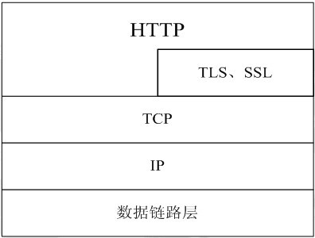

Introduction
1.
第一章：HTTP历史
1.1.
说明
1.2.
历史版本
1.3.
HTTP2.0
2.
第二章：HTTP与TCP/IP
2.1.
OSI七层模型
2.2.
TCP/IP四层模型
2.3.
四层模型与七层模型的区别
2.4.
TCP的三次握手和四次挥手
2.5.
HTTP在TCP/IP协议栈中的位置
3.
第三章：HTTP协议
3.1.
URI与URL
3.2.
HTTP之无状态
3.3.
Cookie
3.4.
Session
Published with GitBook
简介
HTTP在TCP/IP协议栈中的位置
HTTP协议通常承载于TCP协议之上，有时也承载于TLS或SSL协议层之上，这个时候，就成了我们常说的HTTPS。如图2-5所示：
